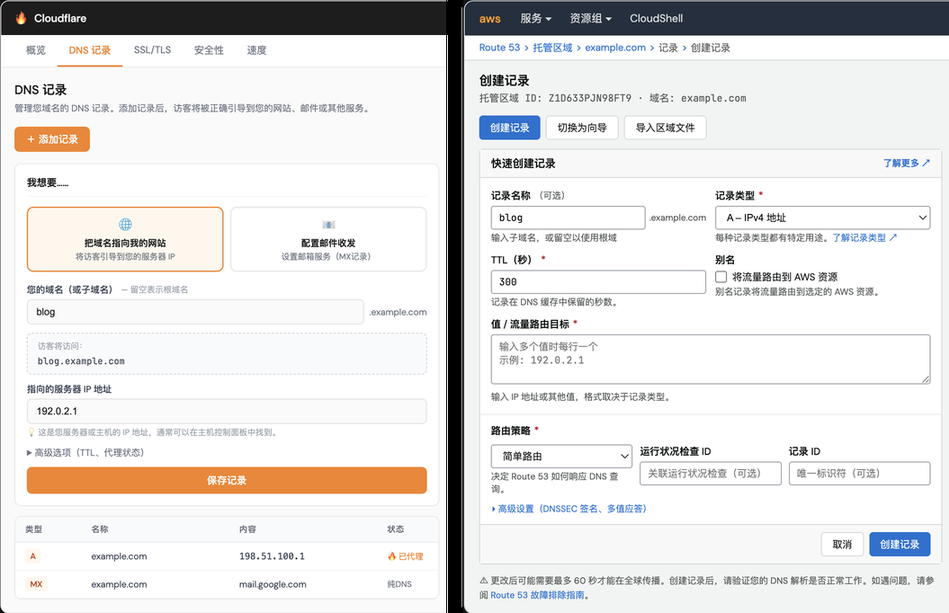
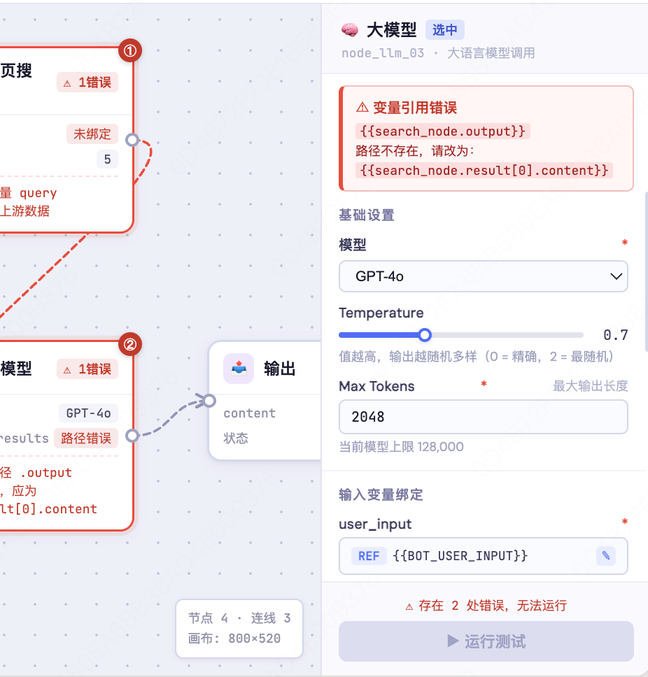

2026 年 5 月，一篇博客悄悄爬上 Hacker News 热榜。标题很平淡：我回到了 AWS，也想起了当初为什么离开。作者是亚马逊的一名 AI 工程师，内容并不新鲜：API 混乱、系统难用、账单像黑箱，这些吐槽工程师们已经念叨了十几年。但这次，评论区炸了。
为什么偏偏是现在？
我做过 AI 基础设施的产品设计，对这类痛点会更敏感一些。但让我真正停下来的，不是那些老工程师的吐槽，而是评论区里多了很多普通用户的声音。他们不懂 IAM，不懂服务器，只是想跑个开源模型、给自己做的小工具搭个后端，或者单纯想让"烧 token"便宜一点，他们开始用上了 AI 云服务。随着 AI 越来越贴近大众，普通用户第一次撞上了一个从来不是为他们设计的系统。
用户变了，但系统没变。这个错位，才是评论区真正在吵的东西。
这件事火了之后，我注意到一个有意思的现象：讨论度变高了，但大家说的"体验"根本不是同一件事。做大模型的人在谈输出的可信度；开发在谈时延和性能；销售在反馈产品满足不了用户的具体场景。每个人都在用"体验"这个词，但指的是完全不同的东西。
"体验"变成了一个万能词，任何与预期不符的地方，都可以往里装。
同时，这个问题在 AI 时代变得更复杂了。传统产品里，体验更多意味着可控、一致、高效；但当产品的另一端由大模型承载，体验开始意味着另一种东西：和一个不确定、不完美但潜力无限的系统之间，能不能建立起协作的流畅感和信任感。"体验"这个词的边界，比以前模糊了很多。
正是这种泛滥和模糊，让我想把它拆清楚。不是为了给它下一个定义，而是想搞明白：当我们说"体验不好"的时候，我们到底在说哪一层的问题？这些层之间，有没有什么内在的逻辑？
其实在说的，可能是完全不同的四件事。
而它们之间，有一条从显到隐的线。
最表层的一层，也是最容易被指出来的那一层，是产品和用户之间的认知错位。
以这次被吐槽的 AWS 为例，我们看一下被称为业内标杆的 Cloudflare，来直观对比一下同一个场景 Cloudflare 是怎么做的。
以"添加域名"这件事为例。Cloudflare 会先问你想做什么，然后给你几个选项，比如"配置网站"或者"配置邮件收发"，选一个，它来处理剩下的。AWS 则直接让你选记录类型，需要先理解这套协议分类体系，才能知道自己该选哪个。
两者的差距不在界面好不好看，而在于出发点不同。Cloudflare 是按用户想完成的事情来组织选项的，AWS 是按系统内部的数据结构来组织的。前者把复杂度藏在背后，后者把它原封不动地交给了用户。

同样的问题在 C 端 AI 产品里也很常见。扣子（Coze）的工作流编辑器里，当节点之间的数据传递出错时，系统给出的报错是 引用路径不存在，应为 search_node.result[0].content。这是一句完全正确的工程描述，但对于一个只想让 Bot 先搜索资料、再整理成摘要的普通用户来说，它等于什么都没说。产品把一个用户完全没有的概念，直接摆在了他面前。

还有一类更常见的情况：功能根本不存在。销售在反馈"体验不好"的时候，很多时候说的其实是这个，用户有一个真实的场景，但产品没有覆盖到。它不会触发报错，只是让用户在某个关键时刻发现产品帮不上忙。
这几种情况，表现形式不同，但指向同一个问题：产品在设计时，对用户的想象和用户的真实处境之间，存在一段没有被填上的距离。而填上这段距离的前提，是想清楚用户是谁——更重要的是，不是谁，以及在什么场景下使用这个产品。
往里走一层，是那些用户感受得到、但很难用语言描述的体验。
稳定性和响应速度是比较基础的例子。用户不会说"这个系统的延迟太高"，他们只会说"这个东西怎么这么慢"，或者更模糊地说"感觉不太对"。这种感受是真实的，但它的来源是系统层面的问题，不是界面能解决的。
AI 产品在这一层带来了一个传统软件没有的新问题：输出本身变得不可预测。
传统软件的等待是有边界的，进度条会走完，操作会成功或失败，结果是确定的。但 AI 的生成是开放式的，用户不知道它什么时候会停，不知道它会不会走偏，不知道这次的结果和上次有多大差距。准召率也是同一类问题，用户不会说"这个模型的召回率太低"，他只会说"它老是答非所问"，或者干脆不再问了。
还有一类体验问题，来自系统的沉默。当一个 AI 助手在执行一个长任务时，用户看到的是一个转圈的图标，或者什么都没有。它在干什么？走到哪一步了？如果中途出错了，它会告诉我吗？传统软件有成熟的解法，但 AI 产品的任务边界是模糊的，很多团队还没有找到好的答案。
这一层的问题，往往不是"用户看到了什么"，而是用户在和一个行为不稳定的系统打交道，却没有任何可以抓住的东西。它不会触发投诉，但会积累成一种隐性的疲惫感，最终让用户悄悄放弃。
还有一层，是用户在使用产品时几乎不会主动意识到的，那就是信任。
2025 年，Cursor 把订阅计划从按次计费改成了按用量计费。改动本身有它的商业逻辑，但执行方式出了问题，通知不够清晰，用户在不知情的情况下产生了远超预期的费用。这是信任的慢性消耗。
同年，Cursor 的 AI 客服机器人编造了一条并不存在的公司政策，导致大量用户取消订阅。这是信任的另一种形态，不在于那条假政策本身，而在于它让用户意识到，如果连客服都会说谎，我还能相信什么？
两件事放在一起，说明信任的破坏可以是慢慢漏掉的，也可以是一下子碎掉的。但无论哪种，结果往往是一样的，用户不会投诉，不会报错，只会悄悄离开。而且往往等你发现的时候，已经晚了。
前两层的问题都还有办法补救，界面可以迭代，系统可以优化。但信任一旦破裂，很难修复。
前面三层，讨论的都是人与产品之间的体验。但前提是，受众是人。
这个前提正在发生变化。
在 AI 协作越来越普遍的今天，很多时候你面对的"用户"不是人，而是另一个模型，或者一个自动化的工作流。这时候，体验的问题就不再只是"人能不能看懂"，而是"系统能不能理解"。
当设计的对象从人变成机器，"好的体验"的定义也随之改变，从"用户能直觉地理解"，变成"系统能无歧义地执行"。
这不是体验概念的终结，而是它的一次扩展。在 AI 时代，一个产品需要同时对两类"用户"负责，一类是坐在屏幕前的人，一类是在系统后台运行的自动化流程。前者需要的是清晰的意图表达，后者需要的是精确的结构化输入。如何在两者之间找到平衡，是接下来产品设计面临的新课题。
而这，也是我觉得"体验"这个词在今天变得更有意思的原因。
回到最开始的问题：体验是什么？
我现在的答案是：体验是产品和它的使用者之间，所有没有被弥合的错位的总和。那些看得见的，那些感受得到的，那些不会主动去想的，每一层都是错位。体验的深度，取决于愿意为"用户"想多远，这个用户可以是人，也可以是 AI。